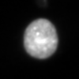

Exploratory Analyses Inspired by the Finkbeiner Lab
The Finkbeiner Lab combines patient-derived neural models with robotic microscopy to follow individual cells over time. That makes acquisition quality more than a cosmetic concern: an out-of-focus or saturated frame can interrupt a trajectory, distort morphology, or create an apparent change that is not biological.
I built a small acquisition stress test from the lab's open-source microscope-image-quality code. It applies the repository's optical point-spread function and exposure transform to a public test image, then makes the keep-versus-review rule explicit before images enter longitudinal analysis.
How it works
The source is a 16-bit BBBC006 cell image included with the lab's microscopeimagequality repository. I ran its Airy point-spread-function and sensor-exposure functions at seven simulated z offsets and three exposure factors. Focus retention is normalized edge energy relative to the z=0 image at the same exposure; saturation is the fraction of raw pixels at or above 98% of the 16-bit range. Display images are contrast-stretched only for viewing.
Analysis 1 — Inspect an acquisition condition
Choose a simulated z offset and exposure. The image, focus-retention curve, and recommendation update together.

Analysis 2 — Stress-test the QC gate
Change the minimum focus retention and maximum saturated-pixel fraction. The matrix shows which conditions are kept, reviewed, or marked for reacquisition.
At the default 60% focus and 1% saturation limits, the gate keeps 6 of 21 conditions. This is a sensitivity analysis, not a validated operating specification: actual thresholds should be set on the lab's imaging modality, stain, cell type, and downstream error tolerance.
Why this matters for the lab
Robotic microscopy gains power from repeated measurements of the same cell. A small acquisition defect can therefore propagate through segmentation, tracking, survival, and morphology readouts. A simple pre-analysis gate creates a review queue while preserving the raw image and the reason it was flagged. The same structure could accept the lab's MIQ class probabilities, patch certainty, and plate metadata rather than the two descriptive metrics used here.
What I would bring
I bring mammalian cell-culture and molecular-assay exposure, microscopy and IVIS experience, R/Python biomedical analysis, and regulated laboratory documentation. I would use that combination to support careful assays, traceable QC, and quantitative interpretation. This demo does not represent prior iPSC differentiation or independent high-content microscopy experience.
Methods note
This is a derived analysis of a public repository test image, not a reanalysis of patient cells. The image originates from BBBC006 and is included in the repository with permission; the code is Apache-2.0 licensed. I executed get_airy_psf, ImageDegrader.apply_blur_kernel, and ImageDegrader.set_exposure from commit 4190ba36. The optical constants follow the repository defaults: 500 nm wavelength, 0.5 numerical aperture, refractive index 1.0, and a 21-pixel kernel spanning 5 µm. I did not run the archived TensorFlow classifier; focus retention is a transparent normalized edge-energy proxy and cannot establish biological image usability. The accompanying paper reports a trained model with 11 defocus levels and patch-level certainty.